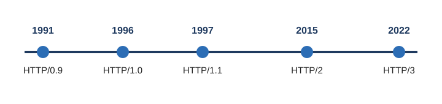

The Evolution of HTTP
HTTP was created by Tim Berners-Lee at CERN in 1989–1991 as part of the original World Wide Web. Since then it has gone through four major versions. Each one was built to fix a problem that the older version could not handle as websites became larger and more complex.

Version Comparison
| Version | Year | Main Improvement |
|---|---|---|
| HTTP/0.9 | 1991 | One command (GET) that returned a plain HTML page. No headers or status codes. |
| HTTP/1.0 | 1996 | Added headers, status codes, and support for images and other file types. |
| HTTP/1.1 | 1997 | Persistent connections that stay open for many requests, plus the required Host header. |
| HTTP/2 | 2015 | Multiplexing (many requests at once on one connection), header compression, binary format. |
| HTTP/3 | 2022 | Runs on QUIC over UDP instead of TCP for faster setup and better handling of lost packets. |
The Problem with HTTP/1.1
HTTP/1.1 served the web for almost twenty years, but it had a weakness called head-of-line blocking. Requests on one connection had to be answered in order, so one slow file delayed everything behind it. Browsers worked around this by opening about six connections per site, which used extra resources.
HTTP/2 and HTTP/3
HTTP/2 fixed most of these issues with three main changes:
- Multiplexing – many requests and responses travel at the same time over one connection.
- Header compression (HPACK) – repeated header data is not sent over and over.
- Binary framing – messages are sent in a format computers read faster than plain text.
HTTP/3 goes further by replacing TCP with QUIC, a newer transport built on UDP. QUIC sets up connections faster and handles lost packets better, which helps mobile users who switch between Wi-Fi and cellular data.